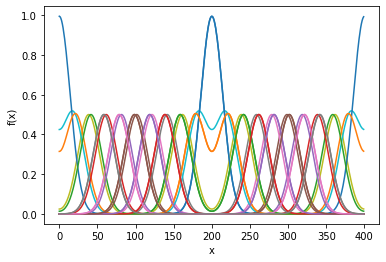
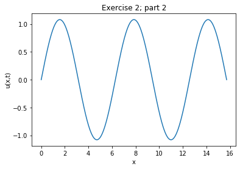

import numpy as np
import matplotlib.pyplot as plt
import matplotlib.animation as animation
def initial_wave(x,x0,A,h):
u = A*np.exp(-(x-x0)**2/h**2)
psi = np.zeros(len(x))
return u,psi
def solve_wave(u,psi,tfinal):
t = 0
uarr = []
tarr = []
psip = psi
while t < tfinal:
psip[:] = psi[:] + s*(np.roll(u[:],1) - 2*u[:] + np.roll(u[:],-1))
u = u + dt*psi
psi = psip
uarr.append(u)
tarr.append(t)
t += dt
return uarr,tarr
def animate_func(x,uarr,tarr,A,nstep):
fig, ax = plt.subplots()
line, = ax.plot([],[],'r')
ax.set_ylim(-A/2,A)
ax.set_xlim(x.min(),x.max())
ax.set_xlabel('x')
ax.set_ylabel('f(x)')
def update_line(i):
line.set_ydata(data[i])
line.set_xdata(x)
return line,
data = []
for i in range(0,len(tarr),nstep):
data.append(uarr[i])
nfrm = int(len(data))
ani = animation.FuncAnimation(fig, update_line, frames=nfrm, interval=1, blit=True, repeat=True,cache_frame_data=True)
plt.show()
#-------------------------------------------------------------------------------------------------------------------------
nx = 400.0
dx = 1.0
x = np.arange(0,nx,dx)
x0 = 200.0
h = 20.0
A = 1.0
v = 1.0
tfinal = 550
s = 1.0
dt = s*dx**2/v**2
[u,psi] = initial_wave(x,x0,A,h)
[uarr,tarr] = solve_wave(u,psi,tfinal)
cnt = 20
for i in range(0,len(tarr),cnt):
plt.plot(x,uarr[i])
plt.xlabel('x')
plt.ylabel('f(x)')
plt.show()
nstep=2
animate_func(x,uarr,tarr,A,nstep)

